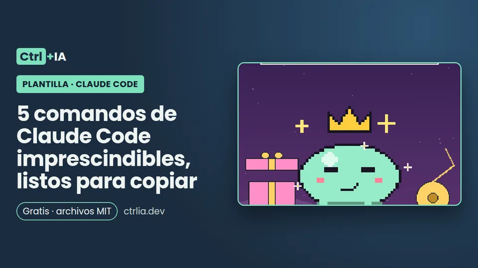

Plantilla · Intermedio · 5 min
5 comandos de Claude Code imprescindibles, listos para copiar
Cinco skills en español para Claude Code: commit, descripción de PR, arreglar tests, explicar código con Haiku y revisión antes del push.

Probado con Claude Code 2.1.316 · revisado
Ver los archivos en GitHub Gratis · licencia MIT
Qué incluye
Un pack de 5 skills en español para Claude Code 2.1.316, gratis en el repositorio ctrlia-pack-comandos. Cada una enseña una técnica distinta del frontmatter:
| Comando | Qué hace | Técnica que enseña |
|---|---|---|
/commit-es | Commit con mensaje convencional en español | Inyección de contexto con ! + comando, allowed-tools, disable-model-invocation |
/pr-descripcion | Descripción de PR desde los commits y el diff | Script de apoyo que siempre termina con 0, argumento opcional |
/arregla-tests | Bucle de tests hasta verde, sin trampas | $ARGUMENTS y effort: high |
/explica | Explica código con un subagente Explore en Haiku 5.5, barato y sin tocar nada | context: fork, agent, model: haiku, effort: low |
/antes-de-subir | Revisión de secretos, archivos grandes y restos de depuración antes del push | Script de revisión + comprobaciones de tu CLAUDE.md |
Comando o skill: qué estamos instalando
Para el usuario, los comandos personalizados y las skills son lo mismo: una skill en .claude/skills/<nombre>/SKILL.md se invoca con /nombre, igual que un archivo de .claude/commands/<nombre>.md, que la documentación llama formato antiguo y que sigue funcionando. Usamos skills porque admiten archivos de apoyo (los scripts de /pr-descripcion y /antes-de-subir).
Dónde instalarlas: en ~/.claude/skills/ valen para todos tus proyectos de este equipo; en .claude/skills/ del repositorio, para todo el equipo al hacer commit. Si hay una con el mismo nombre en los dos sitios, gana la personal.
Elegimos nombres en español que no coinciden con ningún comando integrado de la 2.1.316 (hay más de 100: /review, /verify, /simplify, /code-review…): si una skill tuya se llama igual que uno integrado, lo sustituye en tu terminal, y eso confunde. Claude Code vigila esas carpetas, así que no hace falta reiniciar; solo si la carpeta skills no existía al abrir la sesión, ejecuta /reload-skills. Si es la primera skill que instalas, la receta tu primera skill explica cada campo paso a paso.
1. /commit-es y 2. /pr-descripcion
/commit-es inyecta git status --short y el resumen del diff preparado con líneas que empiezan por ! y llevan el comando entre comillas invertidas, que la documentación describe así: el comando se ejecuta antes de enviar la skill y Claude recibe su salida, no el comando. Después Claude lee el diff y escribe un mensaje tipo(ámbito): resumen en español e imperativo. Lleva disable-model-invocation: true porque tiene efectos (hace commit): Claude no puede lanzarla por su cuenta, solo tú con /commit-es, y la documentación indica que así su descripción ni siquiera ocupa contexto. allowed-tools aprueba git add, commit, status y diff solo durante ese turno.
/pr-descripcion ejecuta un script propio (contexto.sh) que saca rama, commits y archivos frente a la rama base (argumento opcional; por defecto origin/HEAD o main) y siempre termina con 0, porque la documentación avisa de que un comando inyectado que falla aborta toda la skill. Claude devuelve el Markdown con qué cambia, por qué, cómo probarlo y riesgos; no crea el PR ni hace push. Si además quieres que una IA revise tus PR en GitHub, mira la receta de revisión de PR con GitHub Actions.
3. /arregla-tests
Es la skill para la frase que más se repite: «arregla los tests». Recibe el comando de tests como argumento (/arregla-tests npm test) gracias a $ARGUMENTS; si no lo das, usa el de CLAUDE.md o AGENTS.md o lo detecta, y te dice cuál va a usar. Define un bucle corto: primer fallo real, causa en una frase antes de editar, arreglo en el código de producción, test individual y suite completa, y parar tras 3 intentos fallidos con el mismo test. Y prohíbe explícitamente lo que hace que un agente «gane» con trampas: skip, xfail, .only o borrar asserts.
Lleva effort: high en el frontmatter: según la documentación oficial, el effort de una skill se aplica hasta el final del turno en que se ejecuta y manda sobre el de la sesión (salvo CLAUDE_CODE_EFFORT_LEVEL), y la tabla de effort recomienda high precisamente para arreglar bugs en código existente (más en Opus vs Sonnet vs Haiku). No lleva disable-model-invocation: Claude puede usarla solo cuando vea tests en rojo. Las ediciones siguen pasando por tu modo de permisos.
4. /explica (barata y sin riesgo)
context: fork hace que la skill se ejecute en un subagente aparte; con agent: Explore es el subagente integrado de exploración, que según la documentación arranca sin CLAUDE.md ni git status para tener un contexto pequeño, por eso la skill contiene todas las instrucciones. Con model: haiku y effort: low (con context: fork, esos campos fijan el modelo y el esfuerzo del subagente), la explicación corre en Haiku 5.5 (0,10/0,50 USD por millón de tokens) aunque tu sesión esté en Opus.
El resultado vuelve a tu conversación como un resumen de máximo 25 líneas: qué hace, entradas y salidas, quién lo usa con ruta:línea y casos raros. No modifica archivos. Úsala al llegar a un repositorio nuevo: /explica src/auth/ o /explica calcularTotal. Si quieres que espere el resultado en el mismo turno, añade background: false; por defecto el fork corre en segundo plano y te avisa al terminar. Más sobre subagentes en la receta de subagentes.
5. /antes-de-subir
Ejecuta un script de revisión que mira lo que vas a subir: los commits sin subir respecto al upstream (o a origin/HEAD o main si no hay upstream) y los cambios sin commit, incluidos archivos nuevos. Busca en las líneas añadidas patrones de secretos (sk-ant-, tokens de GitHub, claves AKIA, claves privadas, «password/secret/token =»), archivos .env o de claves (excepto .env.example), archivos de más de 1 MB y restos de depuración (console.log, debugger, breakpoint(), pdb). Luego Claude ejecuta las comprobaciones de tu CLAUDE.md o AGENTS.md y devuelve una lista ✅/❌. Un posible secreto es bloqueante. Lleva disable-model-invocation: true y no hace push ni commit.
Ojo con el nombre: la documentación explica que si existe una skill llamada verify o simplify, Claude la ejecuta antes de cada commit (2.1.286 o posterior). Si quieres ese comportamiento automático, puedes copiar esta skill como .claude/skills/verify/ sin disable-model-invocation, sabiendo que sustituye al /verify integrado.
Cómo usarla
1. Descarga el pack
git clone https://github.com/carlosp5751258-lgtm/ctrlia-pack-comandos2. Cópialo donde lo quieras usar
Para todos tus proyectos de este equipo:
mkdir -p ~/.claude/skills && cp -r ctrlia-pack-comandos/.claude/skills/. ~/.claude/skills/
chmod +x ~/.claude/skills/pr-descripcion/contexto.sh ~/.claude/skills/antes-de-subir/revisar.shO solo para un repositorio (y para tu equipo), desde la raíz de ese repositorio:
mkdir -p .claude/skills && cp -r ../ctrlia-pack-comandos/.claude/skills/. .claude/skills/ && git add .claude/skills3. Comprueba que aparecen
Abre Claude Code, escribe / y verás las cinco; o ejecuta:
/skills4. Pruébalas en un repositorio de juguete
Crea un cambio, git add, y luego /commit-es. Después /explica <archivo>, /antes-de-subir y /pr-descripcion main.
5. Si una no aparece o se aborta
Revisa que la primera línea de SKILL.md sea exactamente --- (la documentación dice que si no, todo el archivo se trata como contenido) y que el YAML sea válido: las descripciones van entre comillas porque llevan «:», que de otro modo rompe el YAML y la skill carga sin campos. Si una skill se aborta con «Shell command permission check failed», es que una regla deny o ask coincide con el comando inyectado: revisa /permissions (y la receta de permisos). Para quitar una skill, borra su carpeta. Para que Claude deje de lanzar alguna por su cuenta, añade disable-model-invocation: true.
Los archivos
Estos son los archivos completos del repositorio, tal cual. Los dos scripts usan set -euo pipefail, comprueban que están en un repositorio git y siempre terminan con 0.
commit-es/SKILL.md
---
name: commit-es
description: "Crea un commit con mensaje en español (Conventional Commits) a partir de los cambios preparados. Úsala cuando pidan «haz commit», «commitea esto» o un mensaje de commit."
argument-hint: "[pista opcional sobre el cambio]"
disable-model-invocation: true
allowed-tools: Bash(git add *) Bash(git commit *) Bash(git status *) Bash(git diff *)
---
# Commit en español
## Estado
!`git status --short`
## Cambios preparados
!`git diff --cached --stat`
## Instrucciones
1. Si no hay nada preparado arriba, enséñame `git status` y pregúntame qué añadir. No uses `git add -A` sin preguntar.
2. Lee el diff preparado con `git diff --cached` (solo lo necesario).
3. Escribe el mensaje: `tipo(ámbito): resumen` en imperativo, en español, máximo 72 caracteres. Tipos: feat, fix, docs, refactor, test, chore. Pista del usuario: $ARGUMENTS
4. Si el cambio no es obvio, añade un cuerpo de 1-3 líneas con el porqué.
5. Ejecuta `git commit -m "<resumen>" -m "<cuerpo>"`. Nunca `--no-verify` ni `--amend` salvo que te lo pida.
6. Muestra el hash y el mensaje final.pr-descripcion/SKILL.md
---
name: pr-descripcion
description: "Redacta en español la descripción de un pull request a partir de los commits y el diff de la rama actual frente a la rama base. Úsala cuando pidan descripción de PR, resumen de la rama o «qué cambia este PR»."
argument-hint: "[rama-base]"
allowed-tools: Bash(bash *pr-descripcion/contexto.sh*) Bash(git diff *) Bash(git log *)
---
# Descripción de PR
## Contexto de la rama
!`bash "${CLAUDE_SKILL_DIR}/contexto.sh" $ARGUMENTS`
## Instrucciones
Escribe en Markdown, en español, sin inventar nada que no esté en los commits o el diff:
- **Qué cambia**: 2-4 viñetas para quien revisa, de lo más importante a lo menos.
- **Por qué**: una frase (si los commits no lo dicen, escribe «Por qué: pendiente» y pregúntamelo).
- **Cómo probarlo**: comandos concretos o pasos.
- **Riesgos**: migraciones, cambios de API, configuración nueva. Si no hay, «Ninguno conocido».
Devuelve solo el Markdown. No crees el PR ni hagas push.pr-descripcion/contexto.sh
#!/usr/bin/env bash
# Commits y resumen del diff de la rama actual frente a la base (por defecto, la rama por defecto del remoto o main).
# Siempre termina con 0: si un comando inyectado en una skill falla, la skill entera se aborta.
set -euo pipefail
git rev-parse --git-dir >/dev/null 2>&1 || { echo "No es un repositorio git."; exit 0; }
base="${1:-$(git symbolic-ref --quiet --short refs/remotes/origin/HEAD 2>/dev/null || echo main)}"
echo "Rama: $(git branch --show-current 2>/dev/null || true) · Base: $base"
echo "## Commits"; { git log --oneline --no-merges "$base"..HEAD 2>&1 || true; } | head -50
echo "## Archivos"; { git diff --stat "$base"...HEAD 2>&1 || true; } | tail -40
exit 0arregla-tests/SKILL.md
---
name: arregla-tests
description: "Ejecuta los tests, encuentra la causa de cada fallo y lo arregla hasta que pasen, sin tocar los tests salvo que estén mal. Úsala cuando fallen los tests o pidan «arregla los tests»."
argument-hint: "[comando de tests]"
effort: high
---
# Arregla los tests
Comando de tests: $ARGUMENTS
(Si está vacío, usa el de CLAUDE.md o AGENTS.md; si no hay, detecta: `npm test`, `pnpm test`, `python3 -m pytest -q`, `go test ./...`, `cargo test`. Dime cuál vas a usar antes de empezar.)
## Bucle
1. Ejecuta el comando y quédate con el primer fallo real (ignora los que derivan de él).
2. Explica la causa en una frase **antes** de editar. Si no la sabes, añade una comprobación temporal en vez de adivinar.
3. Arregla el código de producción. Solo cambia un test si demuestras que el test es incorrecto, y dímelo explícitamente.
4. Vuelve a ejecutar solo ese test; luego la suite completa.
5. Repite. Si tras 3 intentos un mismo test sigue fallando, para y resúmeme lo probado.
## Prohibido
- Saltar o borrar tests (`skip`, `xfail`, `.only`, comentar asserts) para que pase.
- Cambiar dependencias o la configuración del runner sin preguntar.
Al terminar: lista de fallos arreglados con su causa y la salida final de la suite.explica/SKILL.md
---
name: explica
description: "Explica en español qué hace un archivo, carpeta o función del proyecto y cómo encaja con el resto, sin modificar nada. Úsala cuando pregunten «qué hace esto», «explícame este código» o al incorporarse a un repositorio."
argument-hint: "<ruta o nombre de función>"
context: fork
agent: Explore
model: haiku
effort: low
---
Explica en español, para alguien que acaba de llegar al proyecto, este objetivo: $ARGUMENTS
Pasos:
1. Localiza el objetivo (si es un nombre de función, búscalo con Grep). Si no existe, dilo y para.
2. Lee el código y, como mucho, 3 archivos que lo llamen o que use.
3. No modifiques ningún archivo.
Formato de la respuesta (máximo 25 líneas):
- **Qué hace**: 2-3 frases.
- **Entradas y salidas**: parámetros, valores de retorno, efectos (archivos, red, base de datos).
- **Quién lo usa**: rutas con número de línea (`ruta:línea`).
- **Cuidado con**: casos límite o comportamientos raros que veas en el código.antes-de-subir/SKILL.md
---
name: antes-de-subir
description: "Revisión previa a git push: ejecuta las comprobaciones del proyecto y busca secretos, archivos grandes y restos de depuración en los cambios. Úsala antes de subir una rama o abrir un PR."
disable-model-invocation: true
allowed-tools: Bash(bash *antes-de-subir/revisar.sh*)
---
# Antes de subir
## Revisión automática de los cambios
!`bash "${CLAUDE_SKILL_DIR}/revisar.sh"`
## Instrucciones
1. Resume lo que haya encontrado el script de arriba. Un posible secreto es bloqueante: dime archivo y línea y **no** sigas hasta que lo confirme.
2. Ejecuta las comprobaciones del proyecto que indique CLAUDE.md o AGENTS.md (tests, lint, tipos). Si no hay, pregúntame cuáles.
3. Devuelve una lista con ✅ / ❌ por punto: secretos, archivos grandes, restos de depuración, tests, lint, tipos.
4. No hagas push ni commit: solo informa.antes-de-subir/revisar.sh
#!/usr/bin/env bash
# Revisa lo que vas a subir: commits sin subir + cambios sin commit.
# Siempre termina con 0: si un comando inyectado en una skill falla, la skill entera se aborta.
set -euo pipefail
git rev-parse --git-dir >/dev/null 2>&1 || { echo "No es un repositorio git."; exit 0; }
base=$(git rev-parse --abbrev-ref --symbolic-full-name '@{u}' 2>/dev/null \
|| git symbolic-ref --quiet --short refs/remotes/origin/HEAD 2>/dev/null \
|| { [ "$(git branch --show-current 2>/dev/null)" != main ] && git rev-parse --verify -q main >/dev/null && echo main; } \
|| echo HEAD)
desde=$(git merge-base "$base" HEAD 2>/dev/null || echo HEAD)
archivos=$( { git diff --name-only "$desde" 2>/dev/null || true; git ls-files --others --exclude-standard 2>/dev/null || true; } | sed '/^$/d' | sort -u)
[ -z "$archivos" ] && { echo "Sin cambios respecto a $base."; exit 0; }
cambios=$(git diff "$desde" -U0 2>/dev/null || true)
mostrar() { if [ -n "$1" ]; then echo "$1"; else echo "Ninguno"; fi; }
busca() { grep -E "$@" || true; } # grep sin coincidencias no es un error aquí
echo "Base: $base · Archivos cambiados: $(echo "$archivos" | wc -l)"
echo "## Posibles secretos"
mostrar "$(echo "$cambios" | busca '^\+.*(sk-ant-|sk-[A-Za-z0-9]{20,}|gh[pousr]_[A-Za-z0-9]{20,}|AKIA[0-9A-Z]{16}|BEGIN [A-Z ]*PRIVATE KEY|(password|secret|token)["'"'"']?[[:space:]]*[:=])' | cut -c1-160 | head -20)"
echo "## Archivos .env o claves"
mostrar "$(echo "$archivos" | busca '(^|/)\.env($|\.)|\.pem$|\.key$|id_rsa' | busca -v '\.env\.(example|sample|template)$')"
echo "## Archivos de más de 1 MB"
mostrar "$(while read -r f; do if [ -f "$f" ] && [ "$(wc -c < "$f")" -gt 1048576 ]; then echo "$f"; fi; done <<< "$archivos")"
echo "## Restos de depuración añadidos"
mostrar "$(echo "$cambios" | busca '^\+.*(console\.log\(|debugger;|breakpoint\(\)|pdb\.set_trace)' | cut -c1-160 | head -20)"
exit 0Salida real de revisar.sh
En un repositorio de prueba: una rama con un commit que añade un token y un debugger, más un .env.local y un .env.example sin subir.
Base: main · Archivos cambiados: 3
## Posibles secretos
+const k = { token: "abcdefghij" }; console.log(1)
## Archivos .env o claves
.env.local
## Archivos de más de 1 MB
Ninguno
## Restos de depuración añadidos
+const k = { token: "abcdefghij" }; console.log(1)
+debugger;Detecta el .env.local (no el .env.example), el token y el debugger, y termina con 0. Fuentes: skills, comandos, configuración de modelos y subagentes.
Preguntas frecuentes
¿Qué diferencia hay entre una skill y un comando de .claude/commands?
Para invocarlos, ninguna: los dos se usan con /nombre y aceptan el mismo frontmatter (salvo name y paths). La skill admite archivos de apoyo y es el formato recomendado; si hay los dos con el mismo nombre, gana la skill.
¿Tengo que reiniciar Claude Code tras instalarlas?
No: Claude Code vigila ~/.claude/skills y .claude/skills. Solo si la carpeta skills no existía al abrir la sesión, ejecuta /reload-skills.
¿Por qué /commit-es no se ejecuta sola?
Porque lleva disable-model-invocation: true: tiene efectos (crea un commit) y la documentación recomienda reservar esas skills para que las lances tú.
¿/explica gasta mucho?
Poco: corre en un subagente con model: haiku y effort: low, es decir Haiku 5.5, aunque tu sesión esté en Opus.
¿Puedo cambiar los nombres?
Sí, cambia el nombre de la carpeta y el campo name. Evita los de comandos integrados (/review, /verify, /simplify…): tu skill los sustituiría.
¿Funcionan en Windows?
Los SKILL.md sí; los dos scripts son bash, así que necesitan Git Bash o WSL. Sin bash, la documentación indica que los comandos inyectados pasan a PowerShell y estos scripts no funcionarían tal cual.